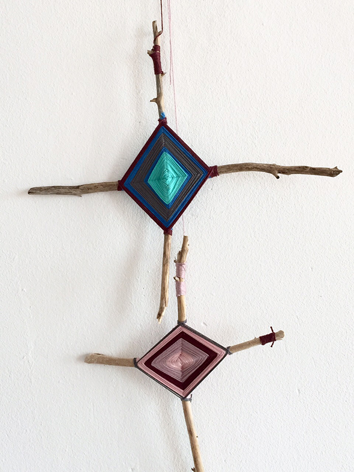
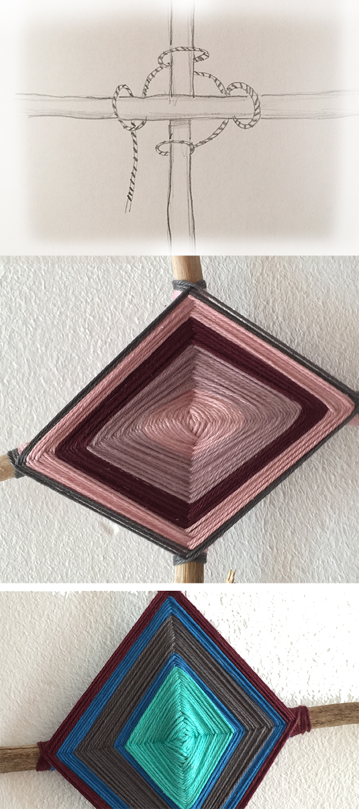

Para los niños más pequeños, el hilo debe ser mas gruesa, que no sólo es más rápido
tampoco se ven tanto las irregularidades.
Con los niños mayores, el ojo puede ser mas complicar por supuesto!
Si mi investigación es adecuadamente, era el padre de los indios, que tejió su niño a nacer un ojo de Dios como protección.
